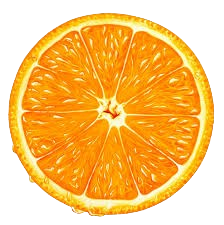
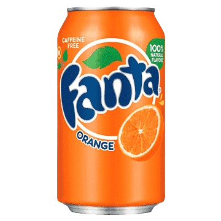
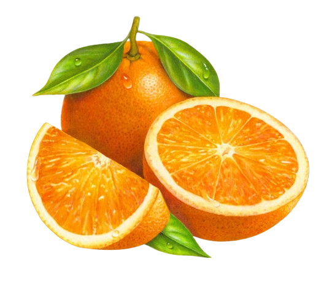
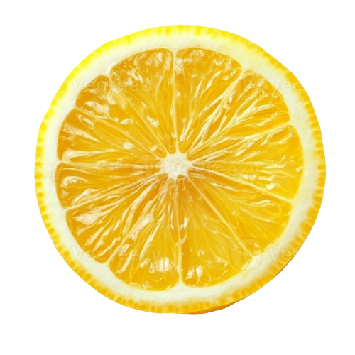
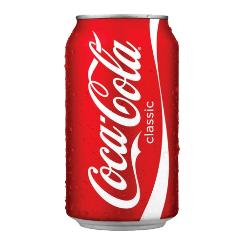
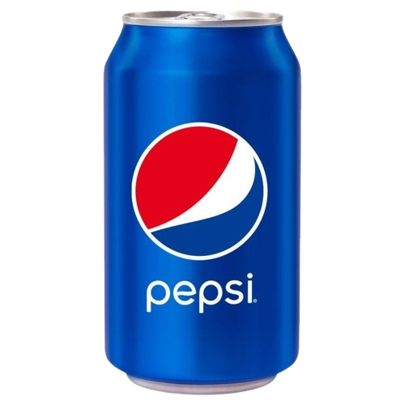

FANTA
  flavor Updated
Fanta is a brand of fruit-flavored carbonated soft drinks that is owned by The Coca-Cola Company. It was created in Germany in 1940 as a result of a trade embargo during World War II, which made it difficult to import Coca-Cola syrup. Fanta is known for its vibrant flavors and colorful branding, with orange being the most popular flavor.


Coca-Cola
Fanta
